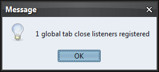

|
Sample code |
import java.awt.*;
import java.awt.event.ActionEvent;
import java.awt.event.ActionListener;
import java.util.Set;
import javax.swing.*;
import org.pushingpixels.substance.api.SubstanceLookAndFeel;
import org.pushingpixels.substance.api.skin.BusinessBlackSteelSkin;
import org.pushingpixels.substance.api.tabbed.TabCloseListener;
import org.pushingpixels.substance.api.tabbed.VetoableMultipleTabCloseListener;
/**
* Test application that shows the use of the
* {@link SubstanceLookAndFeel#getAllTabCloseListeners()} API.
*
* @author Kirill Grouchnikov
* @see SubstanceLookAndFeel#getAllTabCloseListeners()
*/
public class GetAllTabCloseListeners_Global extends JFrame {
/**
* Creates the main frame for <code>this</code> sample.
*/
public GetAllTabCloseListeners_Global() {
super("Get all tab close listeners");
this.setLayout(new BorderLayout());
final JTabbedPane jtp = new JTabbedPane();
jtp.addTab("tab1", new JPanel());
jtp.addTab("tab2", new JPanel());
jtp.addTab("tab3", new JPanel());
jtp.putClientProperty(
SubstanceLookAndFeel.TABBED_PANE_CLOSE_BUTTONS_PROPERTY,
Boolean.TRUE);
SubstanceLookAndFeel.registerTabCloseChangeListener(null,
new TabCloseListener() {
public void tabClosing(JTabbedPane tabbedPane,
Component tabComponent) {
System.out.println("Tab closing");
}
public void tabClosed(JTabbedPane tabbedPane,
Component tabComponent) {
System.out.println("Tab closed");
}
});
SubstanceLookAndFeel.registerTabCloseChangeListener(jtp,
new VetoableMultipleTabCloseListener() {
public void tabsClosed(JTabbedPane tabbedPane,
Set<Component> tabComponents) {
System.out.println("Tabs closed");
}
public void tabsClosing(JTabbedPane tabbedPane,
Set<Component> tabComponents) {
System.out.println("Tabs closing");
}
public boolean vetoTabsClosing(JTabbedPane tabbedPane,
Set<Component> tabComponents) {
System.out.println("Vetoing tabs closing");
return true;
}
});
this.add(jtp, BorderLayout.CENTER);
JPanel controls = new JPanel(new FlowLayout(FlowLayout.RIGHT));
JButton getTabCloseListeners = new JButton("Get tab close listeners");
getTabCloseListeners.addActionListener(new ActionListener() {
public void actionPerformed(ActionEvent e) {
JOptionPane.showMessageDialog(
GetAllTabCloseListeners_Global.this,
SubstanceLookAndFeel.getAllTabCloseListeners().size()
+ " global tab close listeners registered");
}
});
controls.add(getTabCloseListeners);
this.add(controls, BorderLayout.SOUTH);
this.setSize(400, 200);
this.setLocationRelativeTo(null);
this.setDefaultCloseOperation(JFrame.EXIT_ON_CLOSE);
}
/**
* The main method for <code>this</code> sample. The arguments are ignored.
*
* @param args
* Ignored.
*/
public static void main(String[] args) {
JDialog.setDefaultLookAndFeelDecorated(true);
JFrame.setDefaultLookAndFeelDecorated(true);
SwingUtilities.invokeLater(new Runnable() {
public void run() {
SubstanceLookAndFeel.setSkin(new BusinessBlackSteelSkin());
new GetAllTabCloseListeners_Global().setVisible(true);
}
});
}
}
The screenshot below shows that this API returns 1 listener
when there are two listeners registered, one globally and one
on the specific tabbed pane.

|